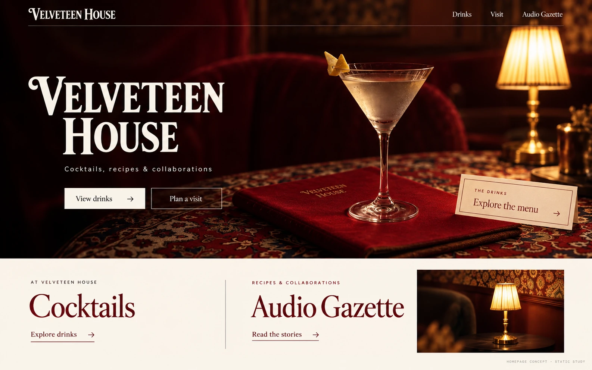
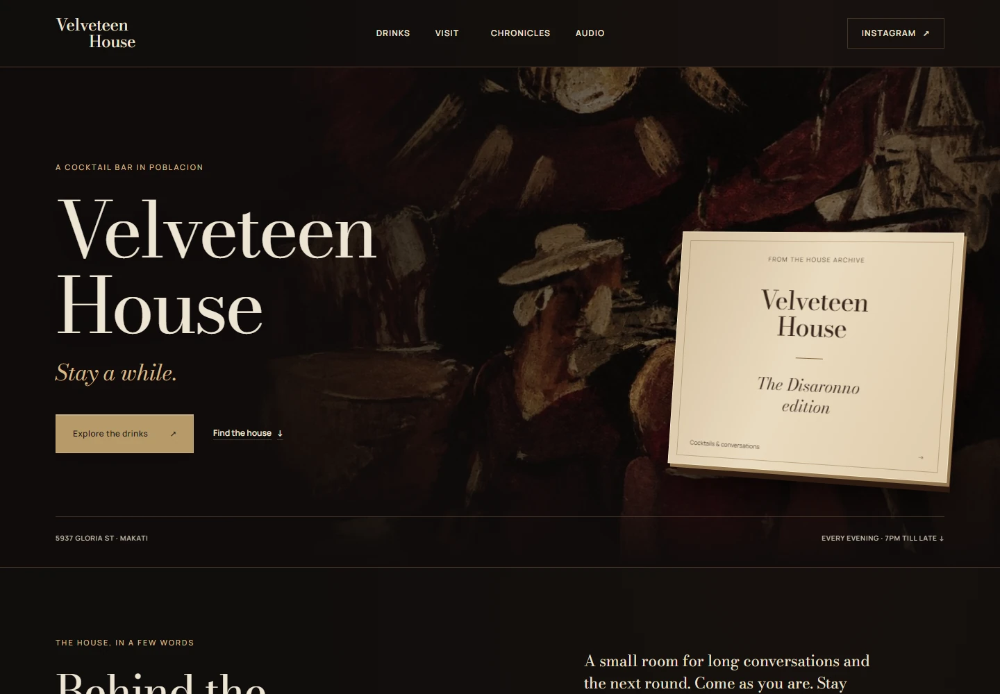
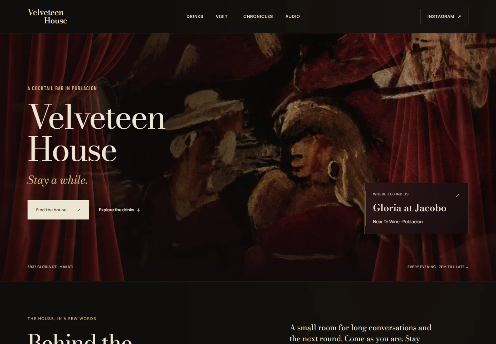
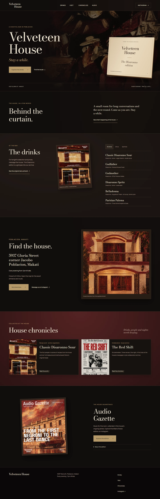
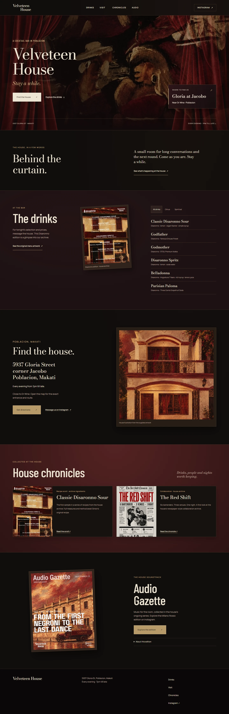
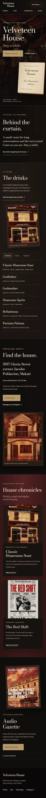
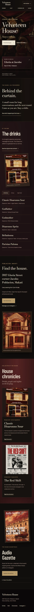

01 · Above the fold
Which hero feels right?

A · Static study · 1 October
Cocktail room
Atmosphere study. The imagery and logo are illustrative, not approved venue photography or identity.
- 1Glass, red velvet and warm lamp lead the image.
- 2“View drinks” is primary; “Plan a visit” is secondary.
- 3Only a short ivory Cocktails / Audio Gazette strip is shown below.

B · Interactive draft · 1 October
Menu-led painting
- 1Large cream Disaronno booklet takes the right foreground.
- 2“Explore the drinks” leads; “Find the house” is a text link.

C · Corrected draft · 2 October
Curtain and location
- 1Red curtains frame a full-width painting.
- 2“Find the house” leads; a location card sits at right.
Hero choice: A, B, C, or a specific mix? Tell us which atmosphere, foreground elements and main action to carry forward.
02 · Below the fold
Which pieces should stay?
Scroll inside each capture to compare Drinks, Visit, Chronicles and Audio Gazette.

B · Full desktop draft
- 1Drinks list sits beside archive-menu artwork and filters.
- 2Visit pairs directions with a house illustration.
- 3Chronicles cards and an Audio Gazette poster follow.

C · Full desktop correction
- 1Drinks, Chronicles and Audio headings use condensed type.
- 2The Drinks list, Chronicle cards and Audio poster remain.
- 3Keeps the house illustration, address and directions.
Lower-page choice: which sections and details should stay? Feel free to choose pieces from both versions.
03 · Narrow screen
Check the phone flow
Open the two 390 px phone captures

B · Phone
Same first interactive draft as above.

C · Phone
Corrected curtain and location hero; lower modules continue below.
04 · Before the next visual pass
Three short choices
Hero
Which image/CTA combination is the target?
Lower page
Which Drinks, Visit, Chronicle and Audio pieces should carry forward?
Real content
Which approved imagery, menu/copy and optional site MP4 can the build use?